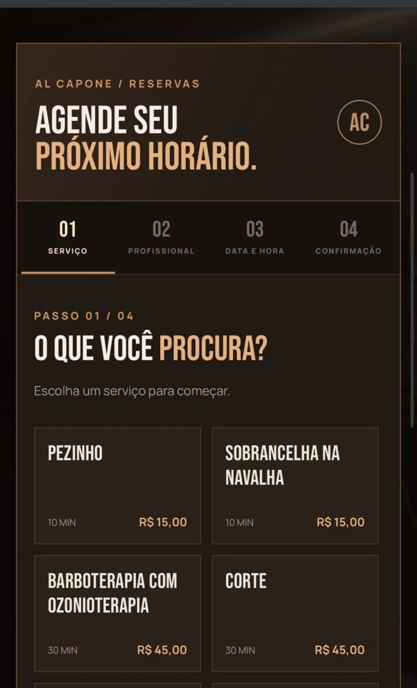

↗
Agendamento pelo navegador.
O cliente abre o link no celular ou computador, escolhe serviço, profissional, data e horário e confirma. Não precisa instalar aplicativo.
SISTEMA PRÓPRIO DE AGENDAMENTO PARA NEGÓCIOS DA BELEZA
Seus clientes escolhem o serviço, o profissional e o horário pelo navegador. Você acompanha as reservas em uma agenda online atualizada em tempo real — sem exigir que o cliente instale um aplicativo.
Para barbearias, salões de beleza, manicures, nail designers, studios e profissionais de estética — com site próprio para apresentar serviços e equipe.


Em vez de depender de uma plataforma por assinatura, você pode ter um sistema desenvolvido para a rotina do seu negócio. O cliente reserva pelo link; a equipe administra os horários em um painel próprio.
O cliente abre o link no celular ou computador, escolhe serviço, profissional, data e horário e confirma. Não precisa instalar aplicativo.
As reservas e os bloqueios registrados atualizam a disponibilidade da agenda, ajudando a equipe a trabalhar com os horários corretos.
Acompanhe reservas e organize serviços, profissionais, expedientes e bloqueios conforme o funcionamento do negócio.
Além de receber reservas, a agenda pode reunir ferramentas para organizar atendimentos, cuidar do relacionamento com os clientes e acompanhar os resultados.
Os recursos são definidos conforme a rotina e as prioridades de cada negócio. Nem toda função precisa entrar na primeira versão.
Você paga pelo desenvolvimento do projeto, não por uma assinatura mensal para usar a agenda. Se precisar de uma função exclusiva, ela é avaliada e orçada à parte, com cobrança única. Domínio, hospedagem, manutenção e serviços externos podem ter custos próprios.
Eu sou uma pequena empreendedora e todos os serviços que me ofereciam em relação a manicure eram sempre além do meu orçamento e interesse. Mas o Wendell foi na mosca ao criar um sistema de agendamento personalizado e - melhor - sem mensalidade. Sou muito grata por ter me gerado economia e praticidade.
A jornada acontece no navegador e pode ser adaptada aos serviços, profissionais, duração dos atendimentos e regras de cada estabelecimento.
Consulta os procedimentos disponíveis, suas informações, duração e valores.
Quando o negócio trabalha com equipe, escolhe quem realizará o atendimento.
Consulta os horários disponíveis na agenda atualizada.
Conclui o agendamento online, sem precisar baixar um aplicativo.
O Instagram continua importante para atrair pessoas. O site resolve o passo seguinte: reúne, em um endereço próprio, as informações que ajudam o cliente a conhecer o negócio, comparar serviços e seguir para o agendamento — sem montar o quebra-cabeça entre posts e mensagens.
Apresente sua identidade, o espaço, a equipe e os diferenciais. Mostre o que torna seu atendimento reconhecível.
Reúna procedimentos, descrições, valores, duração e opções de atendimento. O cliente consulta o que precisa com mais autonomia.
Integre o acesso ao agendamento para que o visitante saia da consulta de informações e avance para escolher um horário.
A Al Capone Barbearia já utiliza uma solução que reúne site responsivo, serviços, profissionais, agendamento online e painel administrativo. O sistema foi desenvolvido para a rotina da barbearia e funciona pelo navegador, sem exigir instalação do cliente.
AS IMAGENS DESTA SEÇÃO PERTENCEM AO PROJETO AL CAPONE BARBEARIA.O cliente conhece a barbearia, consulta serviços e valores, escolhe o profissional, verifica a disponibilidade e confirma o atendimento. A equipe acompanha as reservas em um painel administrativo.
A Al Capone é uma referência real de implementação. Cada novo projeto recebe identidade, conteúdo e funcionalidades definidos conforme os serviços e a rotina do negócio. Ver o projeto Al Capone no ar
Escolha seu segmento para conhecer exemplos de como o site e o agendamento podem ser organizados. Cada projeto é configurado conforme os serviços, a equipe e a rotina de atendimento.
No celular, deslize para explorar os segmentos. Toque em um card para virar e ver os detalhes.
Um caminho claro, com etapas conectadas e decisões alinhadas ao funcionamento do seu negócio.
Mapeamos serviços, profissionais, horários, diferenciais e a forma como os clientes chegam até o negócio.
Respostas diretas sobre o sistema próprio de agendamento, o site e os custos envolvidos.
Ainda tem dúvidas? Vamos conversarSim. Uma alternativa é desenvolver um sistema próprio, em vez de contratar uma plataforma com assinatura mensal. No projeto Al Capone, o cliente acessa um link pelo navegador, escolhe serviço, profissional e horário e conclui a reserva sem instalar aplicativo. O desenvolvimento tem investimento de implantação; domínio, hospedagem, manutenção e serviços externos podem ter custos próprios, informados no orçamento.
Não. O agendamento pode ser acessado pelo navegador do celular ou computador. O cliente abre o link do negócio e faz a reserva sem baixar aplicativo ou instalar nada.
O cliente acessa a página de agendamento, escolhe o serviço, seleciona o profissional quando essa opção estiver disponível, consulta os horários livres e confirma a reserva. A sequência pode ser adaptada à rotina e às regras de cada negócio.
No projeto Al Capone, as reservas são registradas no sistema e a equipe acompanha a agenda pelo painel administrativo. A disponibilidade é atualizada conforme os agendamentos e bloqueios registrados.
Sim. É possível configurar profissionais, serviços, duração dos atendimentos, expedientes, intervalos, bloqueios e permissões de acesso. Também podem ser planejados recursos como clientes VIP, campanhas de desconto, mensagens pós-atendimento e relatórios, conforme o escopo do projeto.
Sim. A estrutura pode ser configurada para diferentes serviços com hora marcada, como manicure, pedicure, cabelo, sobrancelha, cílios, estética e outros procedimentos. O fluxo é definido conforme os serviços e a disponibilidade de cada profissional.
O investimento depende do conteúdo do site, da quantidade de profissionais e serviços e das funções necessárias no agendamento. A proposta apresenta separadamente o desenvolvimento e possíveis custos de domínio, hospedagem, manutenção e serviços externos.
Não necessariamente. Uma função desenvolvida sob medida é avaliada e apresentada em orçamento próprio, com valor de desenvolvimento cobrado uma única vez. Custos de serviços externos, hospedagem, domínio ou manutenção, quando necessários, são informados separadamente.
Não. O site complementa esses canais. Ele reúne informações, serviços, fotos, localização e formas de contato em um endereço próprio, que também pode ser compartilhado no Instagram e no WhatsApp.
Não. Uma boa estrutura técnica, conteúdo útil e informações locais consistentes ajudam os mecanismos de busca a compreender a página, mas não garantem indexação, posições específicas ou citações em respostas de inteligência artificial.
Conte como funciona seu atendimento, quais serviços oferece e como gostaria de organizar os agendamentos. Vamos avaliar a estrutura do sistema, do site e os custos envolvidos para montar uma solução adequada à sua rotina.
Quero conversar sobre meu sistema de agendamentoUsamos apenas armazenamento local para lembrar sua rota e suas preferências. Sem cookies de publicidade. O formulário de contato envia os dados pelo serviço de processamento configurado.
Ao enviar o formulário, você compartilha nome, e-mail (se informado), objetivo e mensagem. As informações são processadas pelo serviço de formulário configurado e encaminhadas ao e-mail indicado. Para dúvidas ou solicitações relacionadas aos seus dados: dell.soares@gmail.com. Você pode reabrir este aviso pelo rodapé.